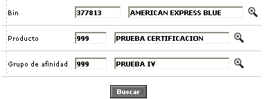
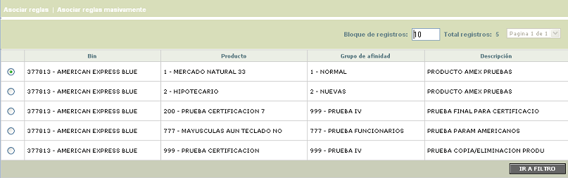
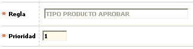
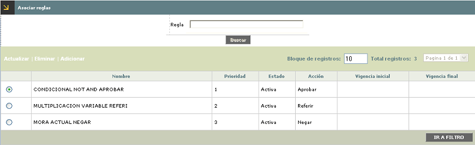
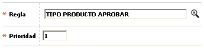
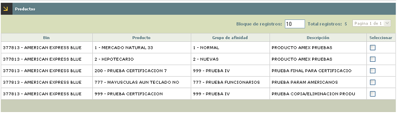
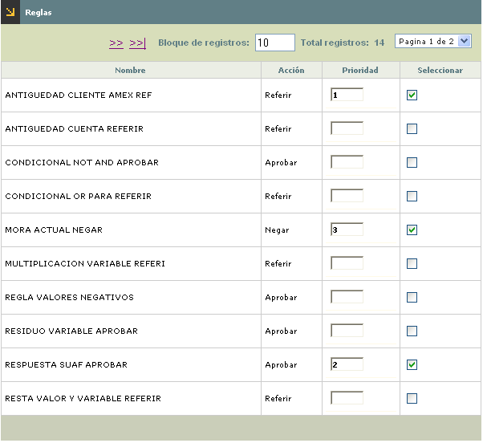

|
Reglas por producto |
Mediante esta opción, la entidad asocia a los diferentes productos crédito las reglas que deben ser evaluadas por el autorizador
El formulario contiene un filtro que le permite al usuario consultar la información específica para los productos pertenecientes a un bin, un segmento, un grupo de afinidad, o un producto en particular. Por defecto, al ingresar al formulario este trae todos los productos que tengan por lo menos una regla asociada.

Esta opción contiene los hipervínculos Asociar reglas y Asociar reglas masivamente.


Asociar reglas: Si el usuario selecciona un producto e invoca el hipervínculo Asociar reglas, se despliega un formulario con el mismo nombre, y el cual contiene un filtro que le permite al usuario consultar si el producto tiene asociada una regla en particular. El formulario muestra un resumen de las características de cada una de las reglas que tiene el producto como son el estado, la acción, vigencia inicial y vigencia final.

El formulario Asociar reglas contiene las opciones Actualizar, Eliminar y Adicionar.
Adicionar: Si el usuario invoca la opción Adicionar, se despliega un formulario con los siguientes campos:

|
Regla |
Campo obligatorio con lista de valores de donde se selecciona la regla que se va a asociar al producto. La lista solo muestra aquellas reglas que tengan definición y se encuentren en estado activa |
|
Prioridad |
Este campo numérico, obligatorio, permite indicar el orden en el autorizador debe evaluar la regla en caso que el producto tenga varias reglas asociadas. |
Actualizar: Si el usuario invoca la opción Actualizar, se despliega un formulario en el cual el único campo editable es la Prioridad.

En este formulario el actor selecciona marcando en la casilla correspondiente, los productos a los cuales les desea asociar reglas masivamente; por lo menos debe seleccionar un producto para poder continuar con el proceso.
Una vez seleccionados los productos y mediante al botón 'Siguiente' el sistema lo lleva a la seguna página del wizard denominada 'Reglas' con los siguientes campos:

|
Nombre |
Este campo de salida muestra todas las reglas parametrizadas previamente, que tienen definición de reglas y se encuentran en estado activas. |
| Acción | Campo de salida, que indica la acción definida para la regla |
| Prioridad | Este campo numérico, obligatorio, permite indicar el orden en el autorizador debe evaluar la regla en caso que el producto tenga varias reglas asociadas. |
|
Seleccionar |
Campo en el cual se marcan aquellas reglas que se van a adicionar a los productos seleccionados en la primera página del wizard |
Una vez que el actor ha seleccionado las reglas a asociar y les ha asignado la prioridad, mediante el botón finalizar, el sistema asocia las regals a los productos escogidos.
Si alguna de las reglas ya está asociada con cualquiera de los productos seleccionados, el sistema le informará al usario y asociará las demás reglas.